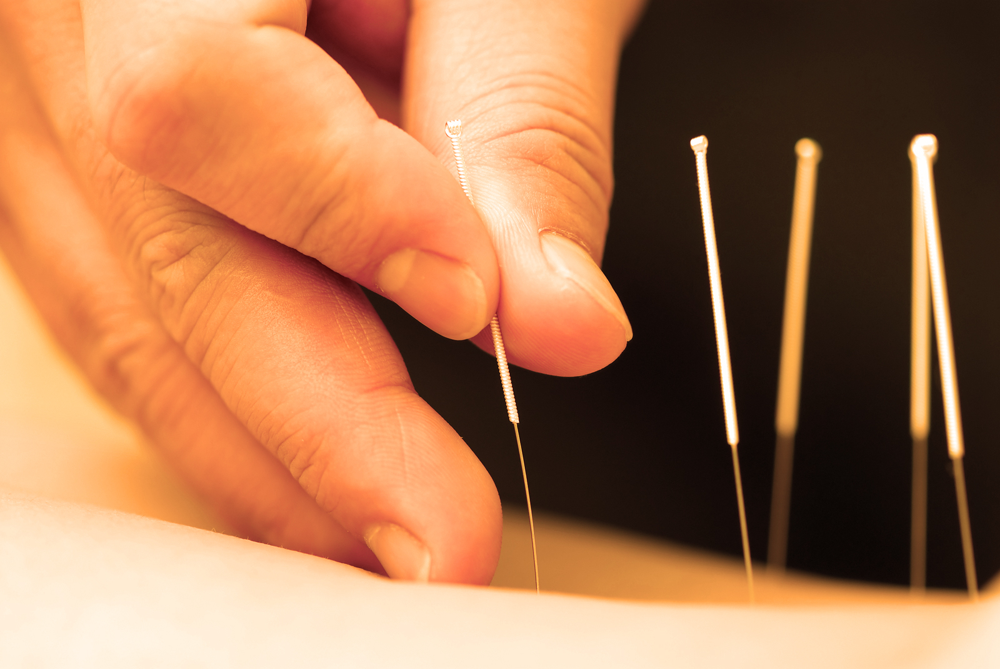
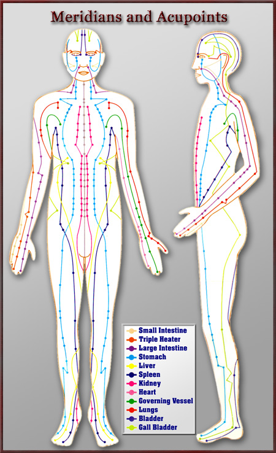
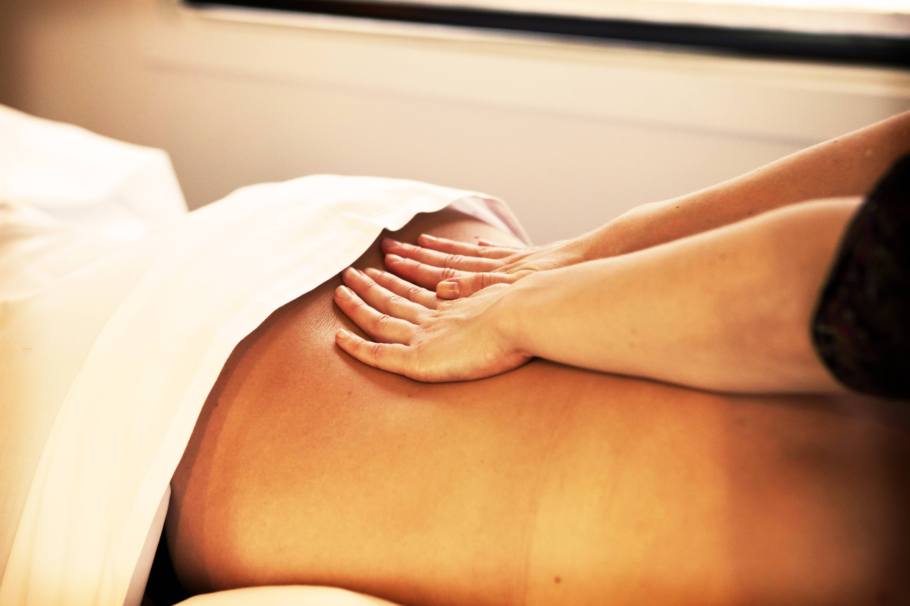
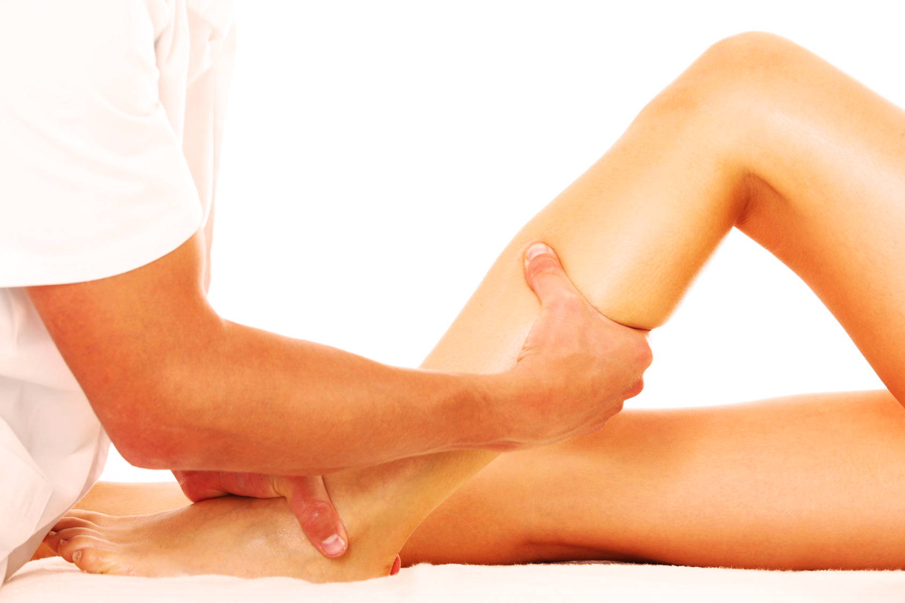
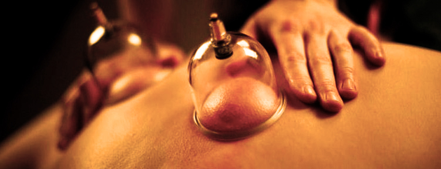
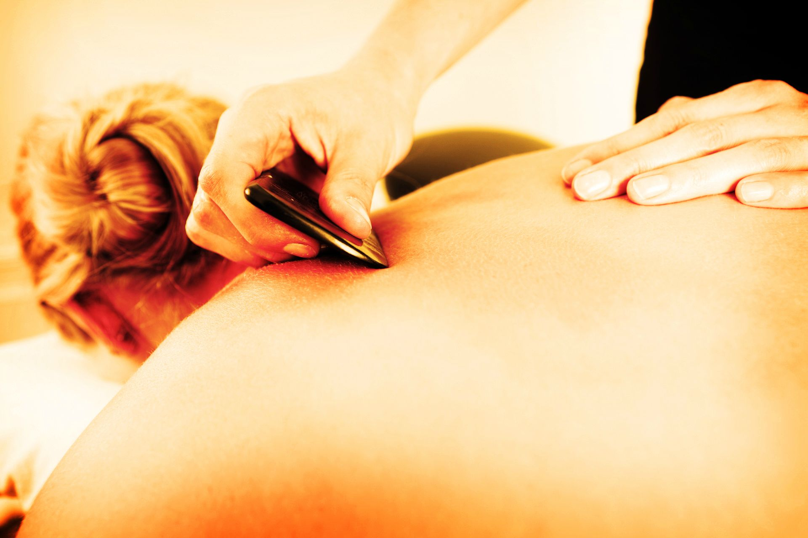
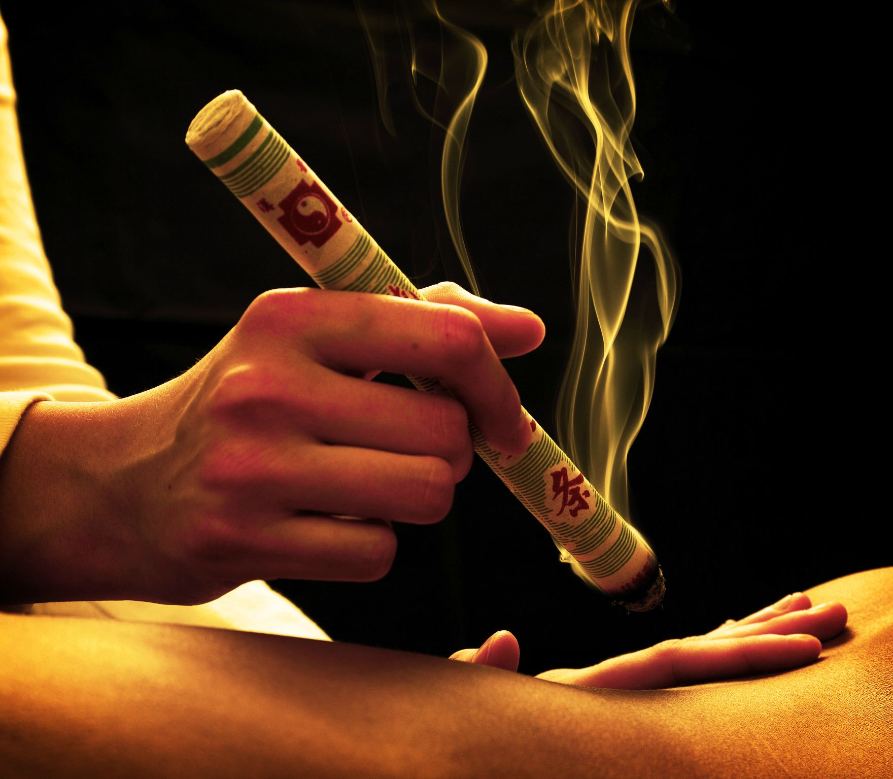

What is Acupuncture?
Acupuncture is the practice of one of the most common forms of traditional Chinese medicine. It involves the insertion of thin sterile needles into the body to help the body unblock Qi (human body’s life energy) pathways. The unblocking of such pathways encourages the body to reinforce certain self-regulation mechanisms. Much like how our immune system is triggered by the presence of foreign pathogens, acupuncture when done properly becomes a stimulant for the body to self-heal and self-correct certain impurities that might cause us pain and stress. This is the basic idea behind how acupuncture treats illnesses.

What is Qi?
The ideology of Qi is essentially the basic building block of traditional Chinese medicine. When healthy, our bodies maintain a harmonized balance of its Qi pathways also known as the balance of Yin and Yang. In other words, the life energy that lives within us is undisturbed. The actual pathways that flow through our bodies and maintain the balance of Yin and Yang are called “meridians”.
How does it all work to help us feel better?
When a person is injured or ill the one or more of the meridians become blocked or disturbed. Once the particular meridian is identified very thin and sterile needles will be inserted into “acupoints” along the meridian. These acupoints are distinct points near the meridian that are able to affect the way Qi is dispersed along any particular meridian. In essence acupuncture is a way to restore the free flow of Qi and re-establish the harmony of Yin and Ying for the inner life force of our bodies.
What is Therapeutic Massage or Tui Na?
Tui Na is a technique/form of massage that is another element of traditional Chinese medicine. It is one of the external manipulative treatment techniques of Chinese medicine and often used in conjunction with other internal techniques like acupuncture. It focuses on external stimulation by ways of pressing, kneading, rolling certain parts of the body in order to help re-establish the flow of our inner Qi. Tui Na also exploits the meridian (Qi pathways) in its treatment of patients similar to acupuncture.
How is Tui Na different than other types of massage?
Tui Na is known as one of the more common types of massage and for good reason. It utilizes principles of Chinese medicine similar to acupuncture. It helps facilitate the free flow of Qi through the meridians and maintains the balance of our inner life energy. Tui Na massage can help our bodies restore physiological functions and heal from certain long term illnesses/pains/stress. It is a less invasive treatment method that is not only therapeutic but also very relaxing and stress relieving.


What is Manual and Manipulative Therapy?
Manual and manipulative therapy is very similar to the more commonly known practice called chiropractic. It is a similar concept that is practiced by western chiropractors as well as many other alternative medicine practitioners across North America. However the practice of manual and manipulative therapy dates back to as far as 3000 years ago by the Chinese. Over the course of history the Chinese has perfected many chiropractic adjustments and techniques that focus on using the hand to manually manipulate the position/posture of the lumbar, cervical and thoracic vertebrae column regions. These techniques helps relief musculoskeletal pain through the manipulation and positioning of the bones and muscles in the spinal region. Despite its frightening description it is a much safer alternative to common chiropractic techniques as the movements and adjustments are far slower and less severe.

What is Dry Cupping?
Cupping is one of the older alternative medicine techniques. Its practice dates back to as far as 3000 B.C. It is the method by which a flame is lit in a cup which creates suction force which is then placed on the body of patients. This technique helps activate better blood flow which in turn promotes healing and can also help establish better Qi flow. The recruitment of blood flow to a certain area by way of cupping is believed to help the healing of deep scar tissue in the muscle, tension, clots, swelling, and help relieve pain. The suction effect created by the flame for cupping can be replicated by mechanical and electrical cupping machinery as well.
What is Wet Cupping and how is it different from Dry Cupping?
Wet cupping is also known as Hijama in Arabic or medicinal bleeding. For wet cupping small punctures are made on the surface of the skin with a needle or a puncture pen. These small holes that are invisible to the naked eye allow for blood to bleed out from the surface of the skin when the suction force from the cup is applied. This method allows for the actual release of blood and toxins from within the body and similar to dry cupping helps promote better flow of Qi in areas of obstruction.

What is Gua Sha?
Gua Sha translated literally means “scraping”. As the name suggests it is a Chinese medicine technique by which the skin is scraped gently to promote slight bruising. Similar to other Chinese medicine techniques, the practice of Gua Sha helps promote blood flow in the particular area and consequently stimulate healing. Gua Sha helps release pathogenic blood stagnation and as a result helps re-establish healthy circulation and metabolic processes. It is often used to help prevent disease by stimulating the immune system. Gua Sha has been proven to be effective in treating anything from muscle aches and tension to migraines and sciatica.
What is Moxibustion?
Moxibustion is one of the many forms of heat therapy used in alternative medicine. It is done with what is called a “jiu” which is derived from an aromatic plant called mugwort. It is similar in shape to a cigar and is lit up and used to apply heat to the surface of the skin. This form of heat therapy utilizes with many of the principles of traditional Chinese medicine. In practice moxibustion is applied to the meridian acupuncture points to warm up the area and promote the flow of Qi and help with blood circulation in the area. The heat produced by the “jiu” has deep penetrating powers and is able to help restore the balance of Qi and circulate blood more effectively than other common heat therapy techniques. Moxibustion has been proven to be an effective treatment for pain relief and conditions such as chronic arthritis and digestive disorders.
